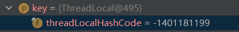
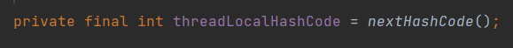

ThreadLocal
Thread有成员变量ThreadLocalMap对象（threadlocals）
ThreadLocal有内部类ThreadLocalMap用于存放线程数据
ThreadLocalMap底层通过Entry数组保存数据
所以其实是每个线程都有一份自己的ThreadLocalMap用于存放所有的entry，独立管理，每个threadlocals都是直接放在线程本身内部当做成员变量的，而每个new出来的threadlocal则是与值封装成Entry，类似key的功能。
Entry继承了弱引用的ThreadLocal，设置时会将ThreadLocal设置进去，当做key

为什么是弱引用？
一旦发现了只具有弱引用的对象，不管当前内存空间足够与否，都会回收它的内存。
所以避免了key的内存泄露，但value还是需要手动使用set或remove回收
一个线程可以有多份数据存储，通过不同的threadlocal对象来获取

1 | /** |
底层通过AtomicInteger维护一个静态成员变量实现ThreadLocal的哈希值生成
AutomicInteger可以保证多线程情况下创建threadLocal得到的hash值必定不同，避免了equals不同而hash值相同的情况。
每当创建一个
ThreadLocal对象，这个ThreadLocal.nextHashCode这个值就会增长0x61c88647。这个值很特殊，它是斐波那契数 也叫 黄金分割数。
hash增量为 这个数字，带来的好处就是hash分布非常均匀。
ThreadLocalMap使用闭散列:(开放地址法或者也叫线性探测法)解决哈希冲突，线性探测法的地址增量di = 1, 2, … 其中，i为探测次数。该方法一次探测下一个地址，直到有空的地址后插入，若整个空间都找不到空余的地址，则产生溢出。假设当前table长度为16，也就是说如果计算出来key的hash值为14，如果table[14]上已经有值，并且其key与当前key不一致，那么就发生了hash冲突，这个时候将14加1得到15，取table[15]进行判断，这个时候如果还是冲突会回到0，取table[0],以此类推，直到可以插入。
按照上面的描述，可以把table看成一个环形数组。
对比FastThreadLocal
。。。待补充
补充与思考
ThreadLocal为了防止内存泄露所做的
ThreadLocal通过弱引用使得reference，也就是ThreadLocal这个key可以被回收（在只有这个弱引用关系时）
如果set的是一个全新为null的slot，而非被回收了弱引用的，也非正常使用的entry，那么set时会顺带进行一次启发式清理，这个清理是从当前下标开始清理log2(n)次（n是当前size，也就是元素数量）
值得注意的
这里的清理是按次数来算的，每次清理都会以遇到空slot为止，并且会对清理过程中的有效entry重新hash
这里修改了Knuth高德纳的著作TAOCP（《计算机程序设计艺术》）的6.4章节（散列) 中的R算法
巧妙之处
弱引用对ThreadLocal的设计上造成了一定的问题，主要体现在key被回收了而value依然存在，entry不为null。
但如果结合ThreadLocal解决哈希冲突的策略（开放定址法）来看这一设计就变得比较合理了。
ThreadLocal使用开放定址法解决哈希冲突，如果当前slot已经在使用，那么需要增加下标值继续向后探测，而正是因为value并没有被回收，所以开放定址法能作为一个有效的策略。
如果整个entry都能直接被回收
考虑这种情况
以下entry都是同一哈希值，通过开放定址法集聚在一起
entry0 entry1 entry2 entry3 entry4
直接将部分entry回收
null null entry2 entry3 entry4
那么就无法通过哈希函数有效查找到后面三个entry了
所以实际上value的保留相当于打上了一个标记，为之后的查找和重哈希提供了遍历。